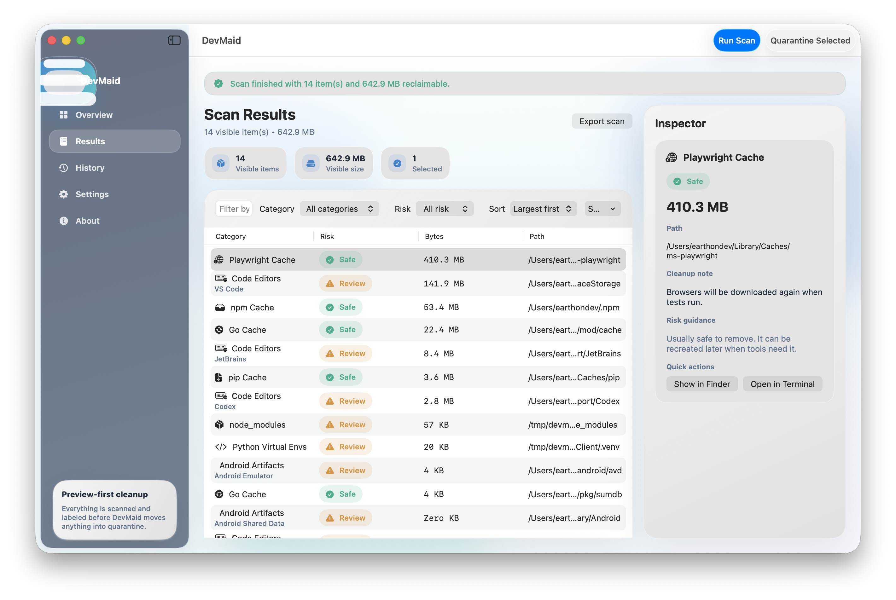
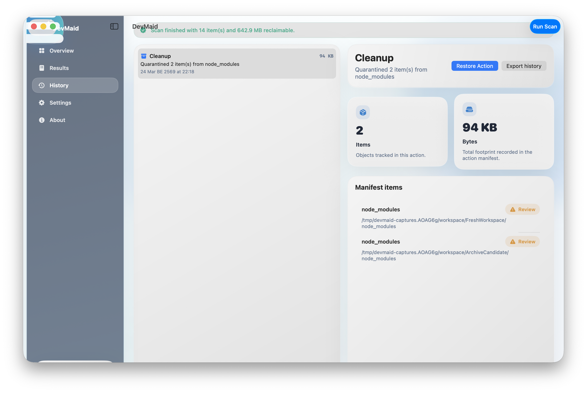
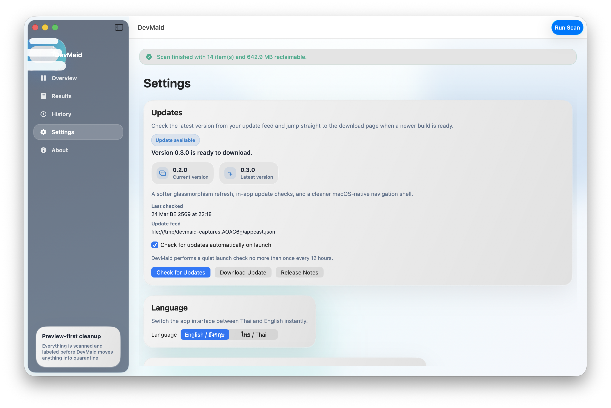
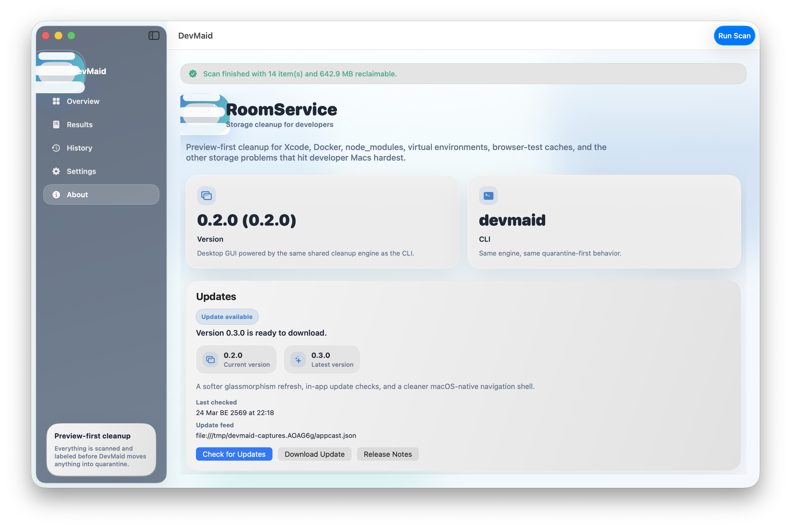

Storage cleanup for developer Macs, without the guesswork.
DevMaid scans Xcode junk, Docker data, node_modules, .venv, editor caches,
package caches, and build artifacts with a preview-first workflow that shows exactly what you are about to clean.

Built around real developer storage problems
Not generic clutter. Not blind one-click cleanup.
Every item stays visible
Review category, path, size, and risk before you move anything.
Xcode, Docker, editors, artifacts
Target the categories that actually fill up developer Macs.
Quarantine and undo included
DevMaid does not jump straight to hard delete in the main workflow.
Native macOS screens
Light-first, glassy, and tuned for review-heavy cleanup work.




Install the way you work
Desktop app for review. CLI for automation.
Desktop app
Download the DMG from GitHub Releases, drag DevMaid.app into Applications, and complete the welcome guide.
Homebrew CLI
Install the terminal tool from the release formula and wire it into maintenance scripts.
Homebrew app
If you prefer Homebrew for GUI installs too, use the cask release file.
Free cleanup for developer Macs, built to be trusted.
DevMaid keeps the important part of cleanup visible: what was found, how risky it is, and how to undo it if needed.